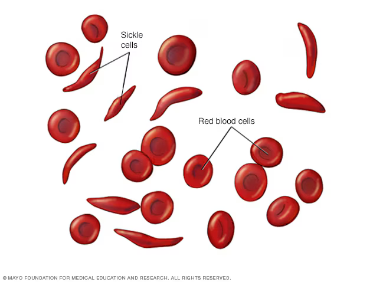
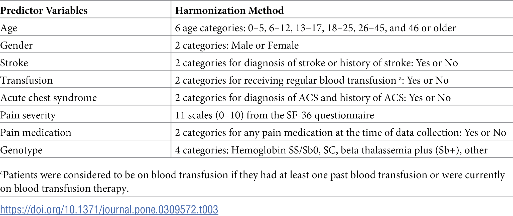
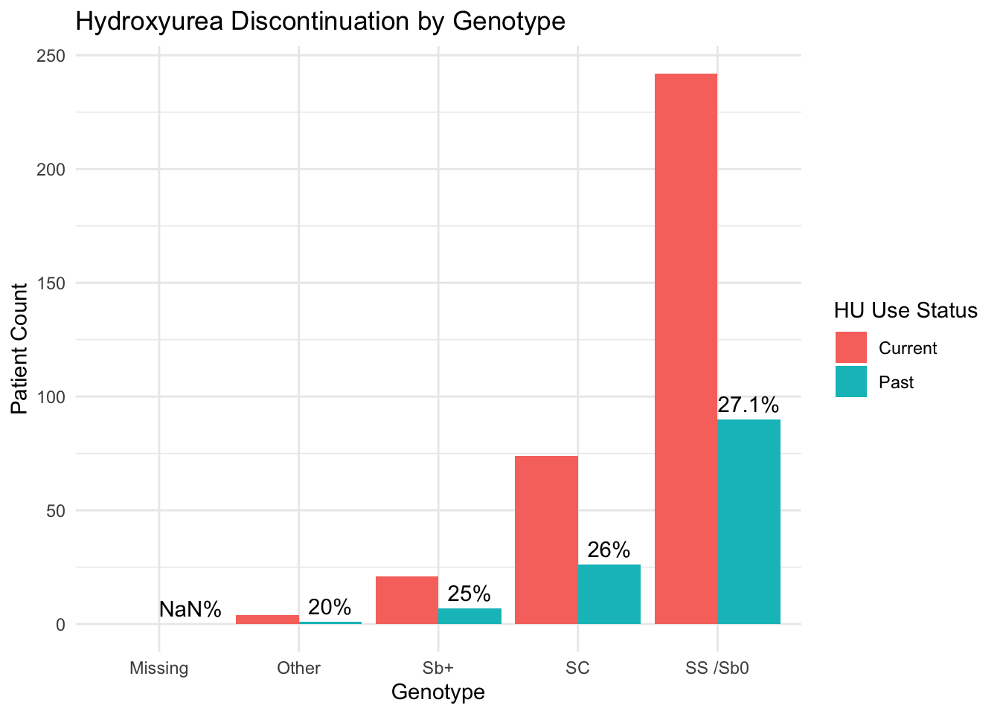
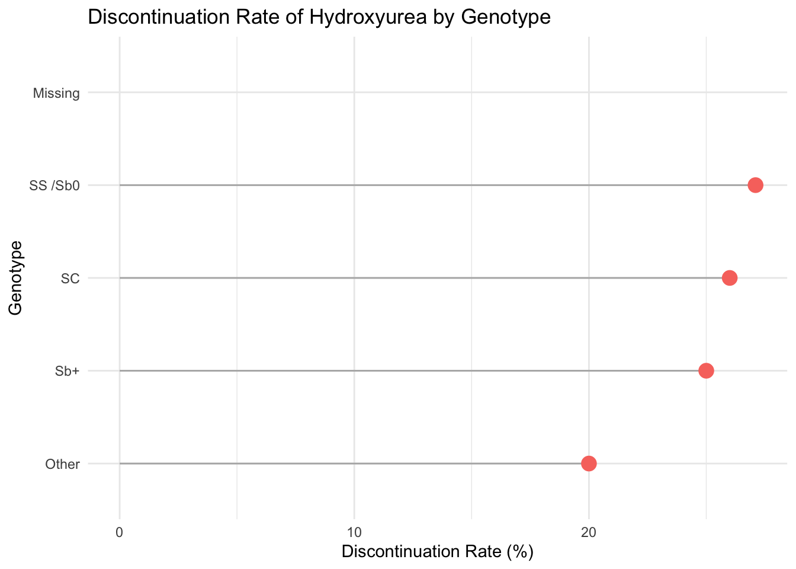
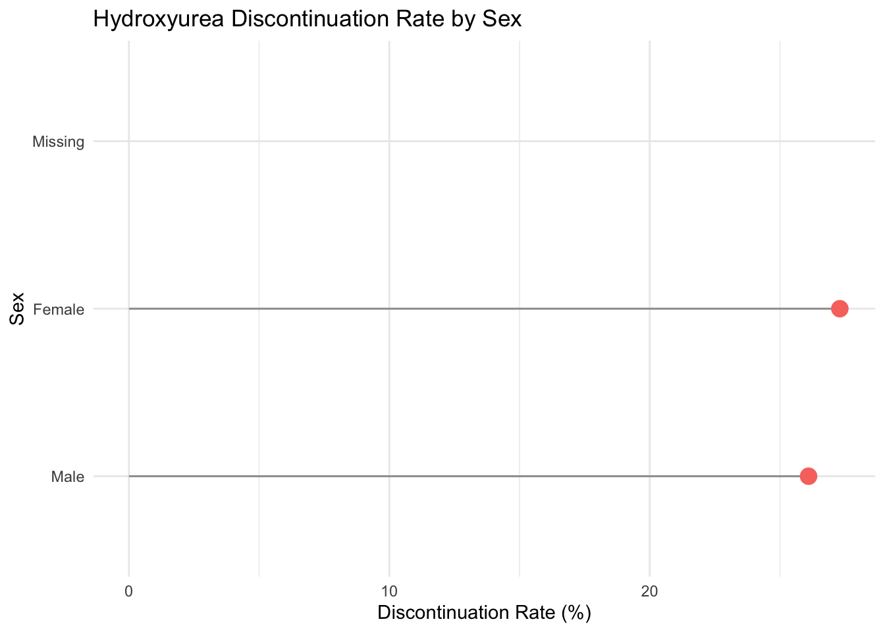
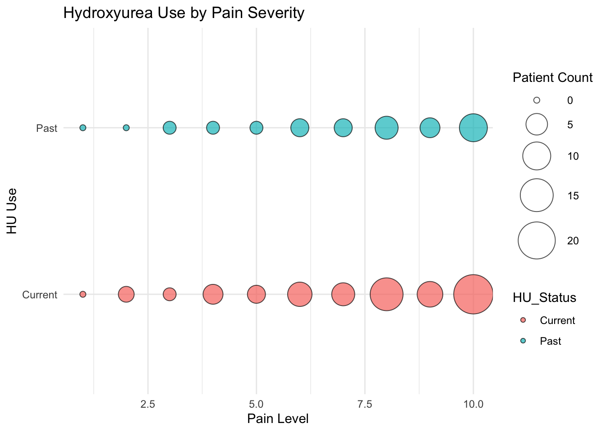

[1] "Variable" "Response" "Baby HUG" "C-Data" "MSH"
[6] "SCDIC" "Walk-PHaSST"
Sickle cell disease is a chronic, inherited blood disorder that primarily affects individuals of African, Mediterranean, Middle Eastern, and Indian ancestry. It is caused by a mutation in the gene that encodes hemoglobin, the protein responsible for carrying oxygen in red blood cells. This mutation leads to the production of abnormal hemoglobin S, which causes red blood cells to become rigid and sickle-shaped. These distorted cells can block blood flow, leading to episodes of severe pain (called vaso-occlusive crises), organ damage, stroke, acute chest syndrome, and increased risk of infection. SCD is associated with significant health disparities in the United States, particularly affecting Black communities, and is considered a marker of structural racism in healthcare access and treatment outcomes.

Hydroxyurea is the first and most widely used disease-modifying therapy for SCD. It works by increasing the production of fetal hemoglobin (HbF), which helps prevent red blood cells from sickling. Clinical trials have shown that hydroxyurea reduces the frequency of pain crises, need for blood transfusions, hospitalizations, and risk of acute chest syndrome. Despite its benefits, many patients discontinue hydroxyurea treatment due to concerns about side effects, fertility, medication burden, inconsistent follow-up, or lack of perceived effectiveness. Discontinuation is a major concern because it may signal barriers to care or unmet patient needs, particularly in underserved populations.
Therefore, this project asks:
What factors are associated with whether a person with sickle cell disease discontinues hydroxyurea therapy?
This question is not only scientifically relevant but personally meaningful to me — my brother has sickle cell disease and is currently taking hydroxyurea. By investigating discontinuation trends, I hope to contribute to a better understanding of how personal and clinical factors affect treatment adherence in this vulnerable population.
This project draws upon publicly available data from the supplemental materials of the study titled “Multisite study of hydroxyurea discontinuation among individuals with sickle cell disease” by Kanter et al. (2024), published in PLOS ONE. The dataset is sourced from the article’s Supplemental Table S2, which aggregates harmonized participant-level data from five major multicenter clinical studies of individuals living with sickle cell disease in the United States. These studies include:
Baby HUG
Comprehensive Sickle Cell Centers (C-Data)
Multicenter Study of Hydroxyurea (MSH)
Sickle Cell Disease Implementation Consortium (SCDIC)
Walk-PHaSST
Each of these studies contributed clinical and demographic data, which were standardized across studies to enable comparative analysis. This harmonization included recoding variables into shared categories, such as genotype groupings, sex, age ranges, and clinical indicators like history of stroke, transfusion, and pain severity.
Individual-level data: Each row in the dataset represents one person living with sickle cell disease.
The dataset includes several thousand individuals across different sites and age groups.
The data reflect clinical assessments and treatment statuses (including hydroxyurea use or discontinuation) from study populations enrolled between approximately 2006–2019, depending on the contributing study.
The dataset itself was harmonized and published as part of a 2024 analysis.
The goal of this project is to identify demographic and clinical predictors associated with hydroxyurea (HU) discontinuation among individuals living with sickle cell disease. To explore this, I focus on one dependent variable (outcome) and two independent variables (predictors) drawn from the harmonized dataset described in Section 2. These variables were chosen based on their clinical relevance and prevalence in the literature on treatment adherence in chronic conditions.
This is a categorical variable representing whether the individual is currently using hydroxyurea or has discontinued use.
In the harmonized dataset, this variable was coded across all five contributing studies and categorized into groups such as:
Continued HU use
Discontinued HU use
Never used HU (in some cases, this may be grouped with “discontinued” depending on context or excluded in focused analysis)
Justification: Hydroxyurea is a cornerstone therapy for managing sickle cell disease, and understanding why patients stop taking it has both personal and public health significance. Discontinuation is often associated with access issues, side effects, provider communication, or psychosocial factors.
This is a categorical variable denoting the individual’s sickle cell genotype, harmonized into the following clinical groupings:
HbSS / HbSβ⁰ (Sickle cell anemia – most severe form)
HbSC
HbSβ⁺
Other or Unknown
Justification: Genotype is a strong predictor of disease severity. Individuals with HbSS or HbSβ⁰ typically experience more complications and may be more likely to be prescribed hydroxyurea at a young age. However, perceptions of severity, side effects, and efficacy may differ by genotype, influencing discontinuation patterns.
This is a binary categorical variable (Male/Female).
Justification: Sex differences in treatment adherence and healthcare experiences are well-documented across chronic illnesses. In the context of sickle cell disease, men and women may have different attitudes toward medication, varying risk perceptions, or differential access to care. Additionally, concerns around fertility or pregnancy while on HU may influence adherence differently by sex.
Age group: Categorized into 0–5, 6–12, 13–17, 18–25, 26–45, and 46+.
Pain severity: Measured by SF-36 or harmonized self-report scores.
These variables will be described using frequency tables and visualizations, and may be included in exploratory models if appropriate.
This table provided from the PLOS ONE article provides more context on the data included in the spreadsheet.

[1] "Variable" "Response" "Baby HUG" "C-Data" "MSH"
[6] "SCDIC" "Walk-PHaSST"


The majority of individuals in the dataset are currently using hydroxyurea, with a smaller but notable proportion having discontinued (past use).There is also a non-negligible amount of missing data, which may reflect gaps in documentation or patient reporting across sites. Most participants are in the HbSS/Sβ⁰ genotype category — the most severe form of sickle cell disease — consistent with expectations that this group is more likely to be prescribed hydroxyurea. The HbSC and Sβ⁺ genotypes are present but less common, and an “Other” category accounts for a small percentage.The sex distribution is roughly balanced, with a slight female majority. This balance is useful for assessing whether hydroxyurea discontinuation varies meaningfully by sex, especially in contexts such as fertility-related concerns.

# A tibble: 5 × 4
Genotype Current Past DiscontinuationRate
<chr> <dbl> <dbl> <dbl>
1 SS /Sb0 242 90 27.1
2 SC 74 26 26
3 Sb+ 21 7 25
4 Other 4 1 20
5 Missing 0 0 NaN Despite genotype-driven prescribing patterns, hydroxyurea discontinuation is substantial even among patients with the most severe form of sickle cell disease, highlighting a need for deeper inquiry into patient-level and systemic barriers to adherence.

Despite having the most severe clinical course, patients with HbSS/Sβ⁰ do not show dramatically lower discontinuation rates, with all rates ranging between 20-27.1%. This might suggest external barriers—like medication access or provider communication—are impacting even high-risk individuals.

Females show a slightly higher HU discontinuation rate than males. This may reflect gendered differences in health decision-making or concerns related to HU’s reproductive side effects. Although sex differences appear small, the slightly elevated discontinuation among females may reflect reproductive concerns, which could be investigated further through qualitative studies or patient-reported outcome measures.

This visualization shows estimated hydroxyurea (HU) use across self-reported pain severity levels (1–10). Notably, the largest concentration of both current and past HU users occurs at higher pain levels, particularly levels 8–10. This suggests that patients experiencing more frequent or intense pain are more likely to have been prescribed HU—but also that discontinuation remains prevalent even among this high-need group. The persistence of past users at severe pain levels may reflect unmet expectations regarding HU’s effectiveness in pain management or other barriers to continued adherence.
This analysis reveals that hydroxyurea (HU) discontinuation cannot be fully explained by genotype, sex, or pain severity alone. Despite clinical assumptions that patients with more severe genotypes (like HbSS/Sβ⁰) would be most adherent due to greater need, the data show comparable discontinuation rates across all genotypes—suggesting that clinical need does not always translate to sustained use. This mirrors findings from the Kanter et al. (2024) study, which identified psychosocial barriers, fertility concerns, and provider trust as critical but often overlooked contributors to HU discontinuation.
Additionally, while females had only slightly higher discontinuation rates than males, this small difference may mask larger, qualitative disparities in decision-making contexts—such as fears around reproductive health and medication burden. The disproportionately high number of past HU users in the 8–10 pain severity range also underscores that pain alone does not guarantee persistence with treatment, potentially reflecting frustration with unmet expectations or inadequate follow-up support.
By examining these trends across harmonized datasets, we gain a broader view of the systemic, behavioral, and personal factors that shape treatment adherence. It becomes clear that improving HU uptake and continuity will require more than prescriptions—it demands trust-building, culturally sensitive counseling, and proactive patient engagement, especially among adolescents and women of reproductive age.
Ultimately, this project reinforces the need for sickle cell care models that extend beyond biomedical logic and include structural and emotional determinants of health, particularly for marginalized populations. Integrating patient voices into research, practice, and policy will be essential to ensure hydroxyurea reaches its full therapeutic potential across the diverse sickle cell community.
Kanter, J., Bedrosian, C. L., Koduri, S., Byrd, J., Thompson, A. A., Neunert, C., … & Lebensburger, J. D. (2024). Multisite study of hydroxyurea discontinuation among individuals with sickle cell disease. PLOS ONE, 19(3), e0309572. https://doi.org/10.1371/journal.pone.0309572
Centers for Disease Control and Prevention (CDC). (2022). Sickle cell disease (SCD): Data & statistics. https://www.cdc.gov/ncbddd/sicklecell/data.html
National Institutes of Health (NIH). (2021). Hydroxyurea treatment for sickle cell disease. https://www.nhlbi.nih.gov/health-topics/hydroxyurea-for-sickle-cell